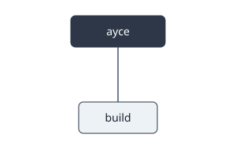
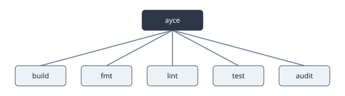
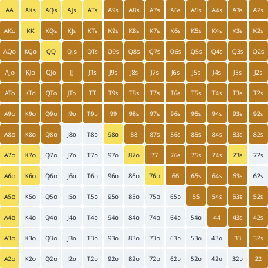
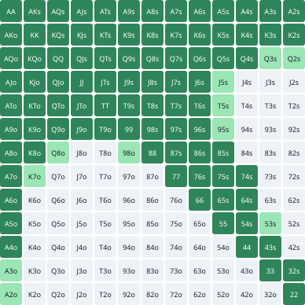
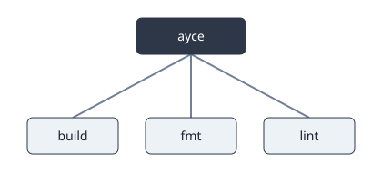

A repo that builds
Every project starts the same way: a manifest that names it, and one file that runs. Nothing else has earned its place yet.
Hi Jeffercodians!
[package]
name = "hello-playbook"
version = "0.1.0"
edition = "2021"
rust-version = "1.95"
license = "MIT OR Apache-2.0 OR GPL-3.0-or-later"
[dependencies]
# bower:begin lints
# bower:end lints
$> git checkout step-001-cargo-init
The two comment lines at the bottom are a region marker. They mark a hole in the file that a later chapter will fill, and they are stripped out before the file reaches the repository. Chapter 3 fills this one.
fn main() {
println!("Hello, world!");
}$> git checkout step-001-cargo-init
Both blocks above carry step="cargo-init", so they land in one commit. That is
right: a manifest without a source file is not a state of the project anyone
would want to check out.
Running it
This step writes no files. op="none" declares a commit that exists only to
mark a moment in the narrative — here, the moment you can first run the thing.
The command is:
$ cargo run
Hello, world!
That fence has no directive above it, so Bower ignores it. Only fenced blocks
introduced by a <!-- bower … --> comment become code in the repository.
The gate
One command has to mean "check everything". In these books that command is
make ayce — all your code, evaluated — and its meaning never varies from
project to project. What varies is what it depends on, and that list grows as
the book does.
.DEFAULT_GOAL := ayce
# bower:begin help
# bower:end help
# bower:begin gate
GATE := build
build:
cargo build --workspace
.PHONY: build
# bower:end gate
ayce: $(GATE)
@echo "ayce — all your code, evaluated"
.PHONY: ayce
$> git checkout step-003-makefile
The GATE variable lives inside the region, which is the whole trick. Later
chapters replace the region wholesale and the ayce target picks up the new
prerequisites without ever being edited again.
help:
@echo "ayce run the whole gate"
@echo "build compile the workspace"
@echo "help this list"
.PHONY: help
$> git checkout step-004-make-help
op="region" replaces the text between the two help markers and leaves the
rest of the file alone. The page shows you five lines; the repository gets the
whole Makefile. Note that the block does not repeat the marker lines — they
stay in the file, waiting for the next edit.
Lints and format
Formatting and linting are not taste. They are the cheapest possible tests: they run in a second and they catch a class of mistake before a human ever reads the diff. So they belong in the gate, and the gate belongs in one command.
Pin the format
# Only max_width is set. Everything else is rustfmt's default on purpose —
# a config file full of overrides is a config file nobody can read.
max_width = 100
$> git checkout step-005-rustfmt
Pin the toolchain
[toolchain]
channel = "1.95.0"
components = ["clippy", "rustfmt"]
$> git checkout step-006-toolchain
Anyone who clones this repository gets that exact compiler, with those exact
components, without being told to install anything. The version appears again in
.tool-versions in chapter 6, and the two must always agree.
Fill the lints region
[lints.rust]
unsafe_code = "forbid"
[lints.clippy]
pedantic = { level = "warn", priority = -1 }
unwrap_used = "warn"
expect_used = "warn"
$> git checkout step-007-lints
This is the hole chapter 1 left open. The priority = -1 is not decoration:
without it, pedantic as a lint group would override the individual lints
listed after it.
Put them in the gate
GATE := build fmt lint
build:
cargo build --workspace
fmt:
cargo fmt --all --check
lint:
cargo clippy --workspace --all-targets -- -D warnings
.PHONY: build fmt lint
$> git checkout step-008-gate-fmt-clippy
--check rather than a plain cargo fmt, and -D warnings rather than a plain
clippy: a gate that quietly fixes things is not a gate. It must fail.
Tests, and failing on purpose
A test that has never failed has never been tested. This chapter writes one that fails, commits it in that state, and fixes it in the next commit — so the failure is a real, tagged, checkoutable state of the repository rather than something that happened off-camera.
A library to test
//! A greeting, and nothing else.
// bower:begin mods
// bower:end mods
// bower:begin greet
/// Build a greeting for `name`.
#[must_use]
pub fn greet(name: &str) -> String {
format!("Hello, {name}!")
}
// bower:end greet$> git checkout step-009-greet-lib
The mods region is empty and has no blank line around it. Its blank line will
arrive as part of its contents later, so that emptying the region again does not
leave a double blank line behind — which the formatter, installed in chapter 3,
would reject.
use hello_playbook::greet;
fn main() {
println!("{}", greet("world"));
}$> git checkout step-009-greet-lib
op="replace" writes a whole new file over the old one. Both blocks share
step="greet-lib", so extracting the function and rewiring the binary are one
commit — the repository never passes through a state where main.rs refers to
something that is not there yet.
A test that passes
// bower:begin tests
#[cfg(test)]
mod tests {
use super::greet;
#[test]
fn greet_uses_the_name() {
assert_eq!(greet("world"), "Hello, world!");
}
}
// bower:end tests$> git checkout step-010-greet-test
op="append" adds to the bottom of a file without repeating its top. The block
opens with a blank line, which is how the separating blank line gets there.
A test that fails
#[cfg(test)]
mod tests {
use super::greet;
#[test]
fn greet_uses_the_name() {
assert_eq!(greet("world"), "Hello, world!");
}
#[test]
fn greet_ignores_stray_whitespace() {
assert_eq!(greet(" world "), "Hello, world!");
}
}$> git checkout step-011-test-that-fails
Your turn: Make the test pass
Fork the repository, then:
git clone https://github.com/abstecker/hello-playbook.git # or your fork
git checkout step-011-test-that-fails
cargo test
Green means you did it. The answer is the next step.
Two things are happening here.
expect="test_fail" declares that this commit's tests are supposed to fail.
That is a promise the toolchain checks: when the replay layer builds this
repository it runs the tests at this step and treats a pass as the error.
The bower:show markers decide what you just read. The block above contains the
whole test module, because the repository needs the whole file — but only the
new test was printed on the page. The markers never reach the repository.
The exercise key is the third thing. It marks this step as a place to stop
reading and start typing: the box under the code above tells you how to fork
the repository, check out exactly this commit, and run the tests yourself. The
next section is one answer, and it stays folded until you open it.
Here is the part of what cargo test prints at this step that matters:
$ cargo test · step 011 of hello-playbook
[...]
thread 'tests::greet_ignores_stray_whitespace' panicked at src/lib.rs:20:9:
assertion `left == right` failed
left: "Hello, world !"
right: "Hello, world!"
[...]
That is not a paste. The output="verify" directive above binds the block to
this step, and bower verify runs the tests and fails the day what they print
changes. bower verify --record is what filled it in, with the whole output.
The two [...] lines are a trim, made by hand after recording. Each one stands
for lines left out, so the quote can skip the test list and the summary and
keep only the failure. It is still checked: the lines that remain must appear
in the output, in this order. --record leaves the trim alone for as long as
that holds, and writes the whole output back the day it does not.
The fix
Show the answer
/// Build a greeting for `name`, ignoring stray whitespace.
#[must_use]
pub fn greet(name: &str) -> String {
format!("Hello, {}!", name.trim())
}$> git checkout step-012-test-that-passes
The fix is in a different region of the same file. That is the point of regions: the test module and the function it tests grow independently, and each edit shows only itself.
Code that does not compile
// bower:begin scratch
/// Deliberately wrong: a string literal is not a `u32`.
#[must_use]
pub fn answer() -> u32 {
let n: u32 = "42";
n
}
// bower:end scratch$> git checkout step-013-wont-compile
pub mod scratch;
$> git checkout step-013-wont-compile
The second block is not decoration. A file that no module declaration points at
is never compiled, so a compile_fail in an undeclared file would be a lie
about the toolchain. Declaring the module and writing the broken code are one
commit, and that commit genuinely does not build.
Notice the blank line at the end of that block. That is the separator promised earlier — it belongs to the region, not to the file around it.
And here is what the compiler says about it, checked the same way:
$ cargo check · step 013 of hello-playbook · E0308
error[E0308]: mismatched types
--> src/scratch.rs:4:18
|
4 | let n: u32 = "42";
| --- ^^^^ expected `u32`, found `&str`
| |
| expected due to this
For more information about this error, try `rustc --explain E0308`.
error: could not compile `hello-playbook` (lib) due to 1 previous error
The repair
/// Parse the text, and fall back to zero when it is not a number.
#[must_use]
pub fn answer() -> u32 {
"42".parse().unwrap_or_default()
}$> git checkout step-014-scratch-fixed
unwrap_or_default rather than unwrap: chapter 3 set unwrap_used = "warn",
and the gate turns warnings into failures.
Supply chain
Your code is a small fraction of what you ship. The rest arrives from a registry, written by people you will never meet, and it changes underneath you. Two tools watch it, and one script gives them a single name.
Rules for dependencies
[advisories]
version = 2
[licenses]
version = 2
# Exactly the licences this project actually needs. A longer list is not
# safer — it is a longer list of things you have stopped checking.
allow = ["Apache-2.0", "GPL-3.0-or-later", "MIT"]
[bans]
multiple-versions = "warn"
$> git checkout step-015-deny-toml
One name for "scan"
#!/usr/bin/env bash
# One definition of "scan". The Makefile calls this; so does CI. When the
# scan changes, it changes in one place.
set -euo pipefail
cargo audit
cargo deny check advisories bans licenses sources
$> git checkout step-016-security-scan
set -euo pipefail is not boilerplate. Without it a failing cargo audit in
the middle of the script would be shrugged off and the gate would pass while the
advisory stood.
Into the gate
GATE := build fmt lint test audit
build:
cargo build --workspace
fmt:
cargo fmt --all --check
lint:
cargo clippy --workspace --all-targets -- -D warnings
test:
cargo test --workspace
audit:
./bin/security-scan
.PHONY: build fmt lint test audit
$> git checkout step-017-gate-test-audit
The tests written in chapter 4 join the gate here, alongside the scan. ayce
itself has not been edited since chapter 2 — it never needs to be, because its
prerequisite list lives inside the region.
CI
CI does not need its own idea of what "good" means. It has one job: check out the code, install the toolchain, and run the same gate you run locally.
One version, declared once more
rust 1.95.0
$> git checkout step-018-tool-versions
This has to agree with rust-toolchain.toml from chapter 3. Two places that
name a version are two places that can disagree, so the rule in these books is
that every version-declaring file is updated together, always.
The workflow
# ... 11 lines elided — full file: https://github.com/abstecker/hello-playbook/blob/step-019-ci-workflow/.github/workflows/ci.yml
- uses: actions/checkout@v7
- uses: dtolnay/rust-toolchain@stable
with:
components: clippy, rustfmt
- uses: taiki-e/install-action@cargo-audit
- uses: taiki-e/install-action@cargo-deny
- run: make ayce
$> git checkout step-019-ci-workflow
Two of those references name a version and one names a thing. actions/checkout
is pinned to a major, resolved when this chapter was written. But
dtolnay/rust-toolchain@stable and taiki-e/install-action@cargo-audit are not
versions at all — stable and cargo-audit name what you want, and the action
resolves it. Those are copied exactly and never "updated".
The last line is the whole argument. CI runs make ayce and nothing else. There
is no second list of checks to drift out of step with the first.
Clearing the scratch
The broken module did its job in chapter 4 and has no reason to stay. This
directive has no code block after it — op="delete" names a file and removes
it, and the paragraph you are reading is what stops the next fence from being
mistaken for its contents.
Deleting the file is not enough on its own. src/lib.rs still declares the
module, and a declaration pointing at nothing does not compile, so the same
commit empties the mods region:
$> git checkout step-020-drop-scratch
That block really is empty. The region returns to the state chapter 4 created it in, and the file goes back to having exactly one blank line where the module declaration used to be.
Try it on a branch
Every chapter so far has been one straight line of commits. Real work is not. You try something, it fails, and you keep the attempt anyway, because the failure is the lesson. This chapter tries two things on two branches. One fails and stays where it is. The other works, and is merged.
An experiment that fails
/// Build a greeting for `name`, ignoring stray whitespace — loudly.
#[must_use]
pub fn greet(name: &str) -> String {
format!("HELLO, {}!", name.trim().to_uppercase())
}$> git checkout step-021-shout
branch="try/shout" puts this commit on a branch of its own, forked from the
last commit on main. The tests from chapter 4 still expect Hello, world!,
so the step claims expect="test_fail", and bower verify holds it to that.
The branch is never merged. It stays in the repository as a state you can check out and poke at:
git checkout try/shout
cargo test
Louder is not better when the tests pin the exact words. Left open, on
purpose: this is the attempt that did not work.
A pr= directive declares a pull request for a branch, and its fence is the
request's description. The repository lists every one in PULLS.md.
A feature on a branch
/// Build a greeting for `name`, ignoring stray whitespace.
#[must_use]
pub fn greet(name: &str) -> String {
format!("Hello, {}!", name.trim())
}
/// One greeting per name, in order.
#[must_use]
pub fn greet_all(names: &[&str]) -> Vec<String> {
names.iter().copied().map(greet).collect()
}$> git checkout step-022-greet-many
A second branch, forked from the same commit on main. It rewrites the same
region the failed experiment did, and that is fine: the two branches never
meet.
#[cfg(test)]
mod tests {
use super::{greet, greet_all};
#[test]
fn greet_uses_the_name() {
assert_eq!(greet("world"), "Hello, world!");
}
#[test]
fn greet_ignores_stray_whitespace() {
assert_eq!(greet(" world "), "Hello, world!");
}
#[test]
fn greet_all_keeps_the_order() {
assert_eq!(greet_all(&["a", "b"]), ["Hello, a!", "Hello, b!"]);
}
}$> git checkout step-023-greet-many-test
Adds `greet_all`: one greeting per name, in the order given. Merged into
`main` by a merge commit of its own.
This branch gets a pull request too. Unlike the experiment's, it does not stay open: the merge commit at the end of the chapter merges it.
Meanwhile, on main
# Changelog
## Unreleased
- CI runs the gate on every push and every pull request.
$> git checkout step-024-changelog
main moves on without the branch. This commit knows nothing about
greet_all.
The merge
$> git checkout step-025-merge-greet-many
merge="feat/greet-many" makes this a merge commit on main with two parents:
the changelog, and the branch's last commit. Bower builds it the same way every
time, by replaying the branch's blocks over main as it stands. The two sides
changed different files, so there is nothing to resolve. Had they both
rewritten the same region, the book would stop at plan time and ask for a
resolution on this step.
Appendix: credits
The cover
The photograph on the cover of this book is Hello World, Brian Kernighan, 1978, from Wikimedia Commons:
https://commons.wikimedia.org/wiki/File:Hello_World_Brian_Kernighan_1978.jpg

It is licensed under the Creative Commons Attribution-Share Alike 3.0 Unported licence (CC BY-SA 3.0):
https://creativecommons.org/licenses/by-sa/3.0/deed.en
You are free:
- to share — to copy, distribute and transmit the work
- to remix — to adapt the work
Under the following conditions:
- attribution — You must give appropriate credit, provide a link to the license, and indicate if changes were made. You may do so in any reasonable manner, but not in any way that suggests the licensor endorses you or your use.
- share alike — If you remix, transform, or build upon the material, you must distribute your contributions under the same or compatible license as the original.
Changes made. The photograph was scaled and cropped to fill the lower two thirds of the cover. Nothing else about the image was altered. The title band above it is separate original artwork and is not part of the licensed work.
Appendix: figures
This appendix is a test bench. It draws the same two pictures several ways, so that every build of this book — the web page, the epub, the PDF — shows whether each way still works.
The two pictures are:
- The gate —
make ayceand what it depends on, at chapter 2, chapter 3, and chapter 5. The list grows as the book does. - A hand-range grid — thirteen by thirteen poker starting hands, shaded by how often a player on the button opens them, or the big blind defends. It is not about Rust. It is here because it is the kind of figure the poker books need, and a grid is a harder test than a graph.
On the web page a figure can respond: hover or tab to a box for its detail, press a chip to change the state. In the epub and the PDF every figure is a still picture. If a figure ever goes missing from one of them, that is this appendix doing its job.
Each section ends with a scorecard row. The criteria are listed at the end.
The full write-up, and the reasoning behind the choice of method, is
docs/EPIC-18_SPIKE_Figures.md in the bower repository.
M3 — the picture is the figure
The figure is an SVG file, drawn once and kept in the book. On the web page a small script swaps the picture for the same SVG inline and makes it respond; everywhere else, the picture is all there is.


On paper this section shows chapter 2 and the button's range; the other states are one chip away on the web page, and listed in full under M7.
What paper kept, from the probe run on every M3 file (the chapter 5 gate shown; the others match):
| feature | in the SVG | on paper |
|---|---|---|
| rounded corners | yes | kept |
| centred text | yes | kept |
| named font | yes | kept |
| data attributes | yes | inert |
| classes | yes | ignored — but every colour is also written on the shape itself, so nothing was lost |
| tooltips, inline styles, CSS variables, HTML inside SVG, transparency, hidden layers | no | — |
Read in a browser, the script fetches each picture from the book's own
server. Opened straight from disk (file://), the browser refuses that fetch
and the page keeps the plain pictures: still correct, just still.
| bytes | other sites | new tools | script off | one source | paper | numbers | hover · step · chips | theme | keyboard | this book | one more state |
|---|---|---|---|---|---|---|---|---|---|---|---|
| 51 KB on load (both figures' first state + 6.6 KB script and style); 99 KB with every state | none; from disk, interaction is lost, pictures stay | none | the pictures | one file per state | everything | typed | yes · yes · yes | inline yes; as a picture no | yes, but one stop per cell: 171 for this section, 717 for the page with every grid on it, a long way to Tab past | yes | 16 lines: a new file, plus every existing state's list of states; the work is the layout arithmetic |
M4 — no script at all
The same SVG, with a tooltip on every box and a hover rule written inside the
file, and no script anywhere. The plan was to embed it with <object>, which
runs an SVG's own styles and tooltips, and keep a plain picture for paper.
That embed did not survive the epub. pandoc kept the <object> tag but
packed only the plain picture's file, so the epub carried a frame pointing at
a file that is not in the book, beside the picture. The PDF got its picture
and the web page got the <object> with the picture hidden; the epub was not
right. So this section uses a plain picture, and its
hover is lost: an SVG shown as a picture runs none of its own styles and
shows none of its tooltips. Fixing that needs bower to write a different
embed for each target — recorded for the Figures EPIC.


On paper the tooltips and the hover rule are simply ignored; the picture is the same as M3's.
| bytes | other sites | new tools | script off | one source | paper | numbers | hover · step · chips | theme | keyboard | this book | one more state |
|---|---|---|---|---|---|---|---|---|---|---|---|
| 55 KB for the two figures shown; no script | none | node, to write the tooltips in at build time | the same pictures — there is no script | generated from M3's files | everything; tooltips and hover style ignored | typed | no · no · no as a picture (hover only, with a per-target embed) | no | no — a picture has nothing to focus | yes | none beyond M3's: it is derived from them |
M7 — drawn by Rust, on paper and in the browser
The picture is drawn by a small Rust crate from the same data the other sections use. The build runs it once to write the files paper reads; the web page runs the same code, compiled to WebAssembly, every time a chip or a hover asks for a new picture. Because one function draws both, the screen and the paper cannot disagree — a check in the build proves it on every change.
Every state is listed here, so paper carries all of them:



The WebAssembly that redraws them is 105 KB — a twentieth of the 2.2 MB a whole poker engine compiles to — and the drawings it makes in the browser are checked, character for character, against the files paper uses. On paper every file matched M3's exactly: they are the same bytes.
| bytes | other sites | new tools | script off | one source | paper | numbers | hover · step · chips | theme | keyboard | this book | one more state |
|---|---|---|---|---|---|---|---|---|---|---|---|
| 226 KB for the section, 105 KB of it the WebAssembly | none; from disk, interaction is lost, pictures stay | wasm-pack and the wasm target (to build); node (to check) | the pictures | one function draws both, checked on every change | everything | typed — the engine-backed version is measured off-book | yes · yes · yes | inline yes; as a picture no | yes, and focus survives every redraw; one stop per cell, as M3 | yes | 2 lines of data, no code |
M2 — a custom element
A custom HTML element draws the figure with ordinary page boxes, the way the design tool's panel did. The same file can also write the figure out as an SVG, which is what paper gets — two drawings of one figure, kept in step only by being in the same file.


Its SVG output matched M3's files byte for byte — but only because both were written to match; nothing ties the boxes on screen to the file on paper. In the epub the element is an empty tag a reader ignores, and the picture shows once.
| bytes | other sites | new tools | script off | one source | paper | numbers | hover · step · chips | theme | keyboard | this book | one more state |
|---|---|---|---|---|---|---|---|---|---|---|---|
| 65 KB (7 KB element, the two pictures, the data) | none; from disk, the element stays empty and the pictures show | node, to write the pictures at build time | the pictures | two renderers in one file | everything | typed | yes · yes · yes | gate yes; grid colours fixed | yes | yes | 2 lines of data, no code |
M5 — a text diagram
The figure is a few lines of text in a diagram language, Mermaid, compiled to a picture when the figures are rebuilt. The whole of the chapter 5 gate is six lines. It is the least work to write and the least to look at: no hover, no chips, the same picture everywhere.


Two findings. First, Mermaid's default puts every label inside a piece of HTML embedded in the SVG, which the PDF drops: paper got five empty boxes. Turning that off (plain SVG text) brought the labels back. Second, the grid can be drawn — as a "block" diagram — but its text is 340 lines, one block and one colour per hand. Nobody writes that by hand, so the build generates it from the same data the other sections use, and the "text diagram" for a grid is a generated file like any other.
Mermaid's pictures also break the rules the other sections' pictures keep: they carry ids, transparency and fractional coordinates, and none of the data attributes a script needs, so nothing could ever make them respond.
| bytes | other sites | new tools | script off | one source | paper | numbers | hover · step · chips | theme | keyboard | this book | one more state |
|---|---|---|---|---|---|---|---|---|---|---|---|
| 131 KB for the two pictures shown; the grid alone is 116 KB, almost three times M3's | none | mmdc, which brings its own Chromium; node | the pictures | one text file per gate state; the grid's text is generated | everything, once labels are plain text; nothing but boxes with Mermaid's default | typed | no · no · no | no | no | yes | 7 lines: copy the chapter 5 file, add one |
Not carried: M1 and M6
M1 — the design tool's export, as is. Dropped into the page as a frame, it works — until the reader is offline. It fetches React and its fonts from other sites every time it is opened, and paper gets a screenshot that nothing keeps in step with the page.
| bytes | other sites | new tools | script off | one source | paper | numbers | hover · step · chips | theme | keyboard | this book | one more state |
|---|---|---|---|---|---|---|---|---|---|---|---|
| 112 KB in the book, plus 248 KB from other sites on every open | unpkg (React), Google Fonts; offline, an empty frame | none to show it; a browser driver for the screenshot | the layout with its template text showing | one export, made in the design tool | a screenshot, kept everywhere, a millimetre-high label on a PDF page, and out of date the day the export changes | typed | yes · yes · yes, inside the frame | its own four, not the book's | buttons yes, cells no | cannot: reads from other sites at read time | none to add: the library has no gate |
M6 — a poker engine in the page. The hand counts on the grid could come from a real poker library compiled to WebAssembly, instead of being typed in. It works, and it costs 275 KB per page against 105 KB for drawing alone. This book teaches a Rust foundation, not poker, so it carries no engine.
It also turned out to be wrong: the engine counts no combinations at all for four-deuce, suited or not. Nothing in the picture showed it. A test comparing the engine's numbers with the typed ones did, and the typed ones were right.
| bytes | other sites | new tools | script off | one source | paper | numbers | hover · step · chips | theme | keyboard | this book | one more state |
|---|---|---|---|---|---|---|---|---|---|---|---|
| 286 KB, 275 KB of it WebAssembly; the engine alone adds 169 KB | none; from a file, nothing | wasm-pack, the wasm target, the engine | nothing: script draws the whole grid | two renderers: script for the screen, Rust for paper | none of its own | from the engine — wrong for 2 hands of 169 | tooltip · no · views | no | buttons yes, cells no | cannot: no engine, by rule | none to add: it draws the grid only |
The scorecard
| C1 bytes | C2 network | C3 tools | C4 script off | C5 one source | C6 paper | C7 truth | C8 hover/step/chips | C9 theme | C10 keyboard | C11 sample book | C12 effort | |
|---|---|---|---|---|---|---|---|---|---|---|---|---|
| M1 iframe (off-book) | 112 KB + 248 KB fetched per open | unpkg, Google Fonts; offline: empty frame | none (Playwright for the screenshot) | template text ({{ … }}) | one export, from the design tool | a screenshot: kept, 244 ppi, never in step | typed | yes · yes · yes (in frame) | its own four, not mdBook's | 18 buttons yes, 127 cells no | cannot (other sites at read time) | n/a (no gate in the library) |
| M2 custom element | 65 KB (7 KB element) | none (file://: images only) | node (build only) | images | two renderers in one file | nothing lost | typed | yes · yes · yes | gate yes, grid fixed | yes | yes | 2 data lines, 0 code |
| M3 SVG + upgrade | 51 KB load / 99 KB all states | none (file://: static only) | none | images | one file per state | nothing lost | typed | yes · yes · yes | inline yes, img no | yes, but one stop per cell: 171 here, 717 Tab stops on the whole page | yes | 16 lines, layout by hand |
| M4 no script | 55 KB, no script | none | node (build only) | same pictures | generated from M3 | nothing lost (tooltips, style ignored) | typed | no · no · no (hover needs a per-target embed) | no | no | yes | 0 beyond M3 |
| M5 Mermaid | 131 KB (grid 116 KB) | none | mmdc (+ its Chromium), node | images | one .mmd per gate state; grid text generated; breaks the SVG contract (ids, opacity, no data-node/data-hand) | nothing lost with plain-text labels; all labels lost by default | typed | no · no · no | no | no | yes | 7 lines (1 new) |
| M6 wasm + JS draws (off-book) | 286 KB (wasm 275 KB; pkcore adds 169 KB raw / 43 KB gz over M7) | none (file://: nothing) | wasm-pack + wasm target; pkcore | nothing | two renderers (JS screen, Rust paper) | none of its own | engine — wrong on 2/169 (42s, 42o: pkcore 0.15 gap) | tooltip · no · views | no | buttons yes, cells no | cannot (no engine, by rule) | n/a (grid only) |
| M7 Rust draws SVG | 226 KB section (wasm 105 KB) | none (file://: static only) | wasm-pack + wasm target; node to check | images | one function, checked (check-m7) | nothing lost (= M3 bytes) | typed (pkcore off-book) | yes · yes · yes | inline yes, img no | yes, focus survives redraw; one stop per cell, as M3 | yes | 2 data lines, 0 code |
C1 bytes the figure adds to the page · C2 other sites contacted while reading · C3 tools added to build the book · C4 what shows with JavaScript off · C5 whether the web and paper pictures can drift · C6 what paper lost · C7 whether the numbers are computed or typed · C8 hover · step · chips · C9 follows the light/dark theme · C10 every hover reachable by keyboard · C11 carried by this book without a poker engine · C12 lines and minutes to add one more state.
Where a method's answer differs between the gate and the grid, the cell holds the worse one and the method's section holds both.